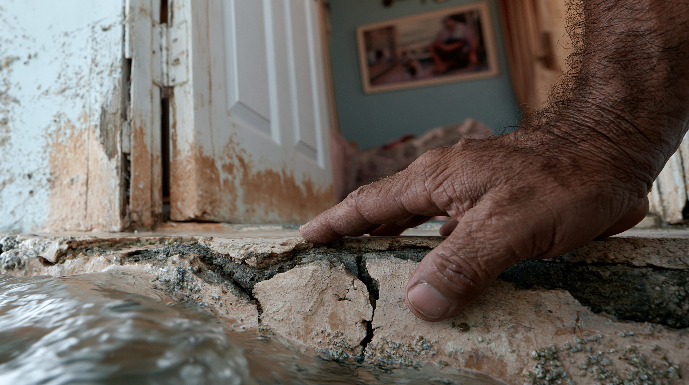
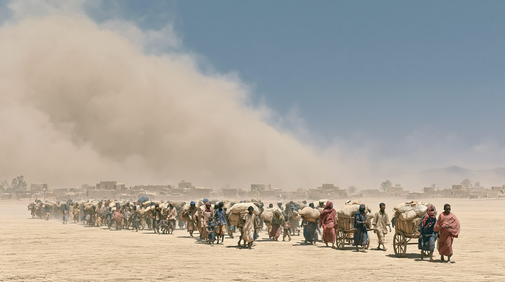
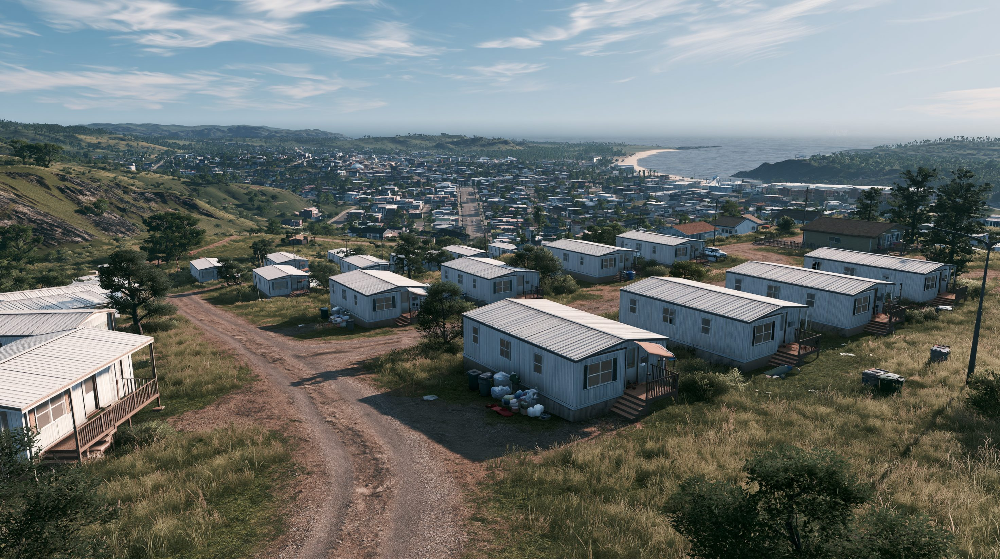

01核心と問い — 「規模」ではなく「責任と負担」
用語について。本稿で使う「気候難民」という言葉は通称であり、国際法上の正式な難民資格を意味しない。1951年難民条約の「難民」は、迫害を理由に国境を越えた人を対象とするため、気候変動を理由とする移動者は原則として対象外である。ここでは、海面上昇・干ばつ・砂漠化・熱波など気候変動の影響によって移動を迫られる人々を広く指す便宜的な言葉として用いる。
世界銀行のGroundswell報告は、有効な排出削減と開発支援が不十分な場合、2050年までにサブサハラ・アフリカ、南アジア、中南米など6地域で最大2億1,600万人が「自国内」で移動する可能性があると試算する。ただしこれは確定した未来ではなく条件付きの最大推計であり、早期の気候対策と包摂的な開発によって、この規模は大幅に抑えられる可能性もある。重要なのは、この多くが国境を越える「難民」ではなく国内・近距離の移動だという点だ。「気候難民が先進国の国境に殺到する」というイメージは実態と大きく異なる。一方で、IDMC〈国内避難民監視センター〉によれば、2024年だけで災害を理由とする国内避難は約4,580万件に達し、その大半は気象関連の事象によるものだった。ただしこれは人数ではなく避難・移動の発生件数であり、同じ人が年内に複数回避難した場合も含まれうる。また、個々の災害をすべて気候変動だけに帰すことはできない。いずれにせよ、気候移動はすでに「未来の問題」ではなく現在進行形である。
にもかかわらず、本記事が焦点を当てるのは規模そのものではなく「責任と負担の分配」だ。海面上昇・砂漠化・熱波という誘因をつくった歴史的責任は主に産業化した先進国にあるが、最初に被害を受けるのは排出にほとんど寄与していない島嶼国やサヘルの人々だ。この非対称こそが「気候正義（climate justice）」を巡る南北対立の核心であり、本記事は規模の実像・法的空白・損失と損害基金・受入国政治の4軸から、この問題を読み解く。

02タイムライン — 「気候難民」を巡る30年
気候変動と移住、初めて結びつく
気候変動に関する政府間パネル〈IPCC〉が第1次評価報告書を発表。気候変動による人の移動が、国際的な懸念として初めて公式に言及された。だが当時はまだ、対策も法的枠組みも存在しなかった。
コペンハーゲン — 1,000億ドルの約束
気候変動枠組条約第15回締約国会議（COP〈国連気候変動枠組条約締約国会議〉15）で、先進国は2020年までに年1,000億ドルの気候資金を途上国へ拠出すると約束した。だがこの約束は長く未達のまま推移し、南北の不信の原点となった。
パリ協定 — だが「移住」は周縁に
世界の平均気温上昇を1.5〜2度に抑える目標で合意。だが気候移動への対応は本格的な制度化に至らず、タスクフォースの設置にとどまった。被害を受ける側の「損失と損害」の議論はなお先送りされた。
テイティオタ事件 — 司法が動いた
国連自由権規約委員会が、キリバス出身者の亡命を巡り初の国際的判断を示した。請求自体は退けたが、「気候変動は生命権への深刻な脅威であり、将来的には気候影響を理由とする送還が国際人権法上禁じられうる」と初めて認めた画期的な判断だった。
基金の始動と「最初の移住条約」
COP27（2022年）で「損失と損害」基金の設立が合意され、COP28（2023年）で始動した。だが拠出は2025年時点で約7.7億ドルにとどまり、必要額に遠く及ばない。一方、豪州とツバルが結んだ世界初の気候移住条約（ファレピリ連合）は2024年に発効し、2025年には年最大280人の移住枠に向けた初回抽選が開始された。アメリカは2025年に損失と損害基金の理事会から離脱し、基金への関与を後退させた。

036つの視点
| 立場 | 最も重視するもの | 求める解決 | 最大の弱み |
|---|---|---|---|
| 沈みゆく島嶼国 | 国家と文化の存続 | 補償＋尊厳ある移住 | 交渉上の発言力が小さい |
| 先進国・排出大国 | 国内の負担と支持 | 人道支援（賠償責任は回避） | 歴史的責任への不誠実と映る |
| 損失と損害推進派 | 排出責任に応じた負担 | 予測可能な資金の制度化 | 資金規模が必要額に遠く届かない |
| 受入国の国内政治 | 社会の受容力 | 秩序ある限定的受け入れ | 移動の規模に対し受け皿が小さい |
| 国際機関・法律家 | 現実の人の保護 | 既存枠組みでの実務的保護 | 強制力のある新条約は遠い |
| 現実主義・適応論 | 費用対効果 | まず適応、移住は最終手段 | 適応の物理的限界を超える地域がある |
04データ・統計
地域別の気候移動 予測人口（2050年・最大ケース、百万人）
世界銀行 Groundswell報告（2021年）。有効な気候対策がない場合の2050年の内部気候移民の推計。出典：World Bank, Groundswell
歴史的なCO₂累積排出シェア（%）
1750年以降の累積。概数。最も排出してきた国々と、最も被害を受ける国々が一致しない「気候正義」の核心。出典：Our World in Data
注目の数字
気候移動の主要現場
| 地域 | 主な誘因 | 移動の形 |
|---|---|---|
| 太平洋の島嶼国（ツバル・キリバス） | 海面上昇・高潮 | 越境移住・条約による移住枠 |
| バングラデシュ沿岸部 | 海面上昇・サイクロン・塩害 | 国内移動（農村→都市） |
| サヘル（西アフリカ） | 砂漠化・干ばつ | 国内・域内移動、紛争と複合 |
| 中東・南アジア都市部 | 熱波・水不足 | 居住・労働の限界による移動 |
出典：世界銀行 Groundswell、IDMC、UNHCRを基に整理
05深掘り — 法的空白・資金ギャップ・日本の立ち位置
